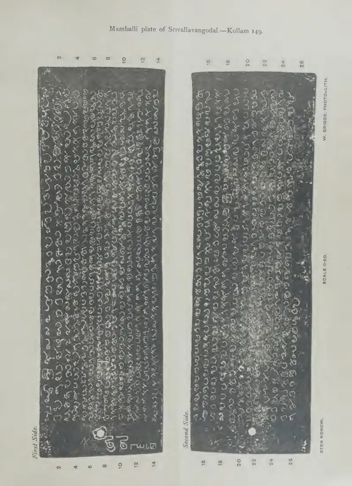
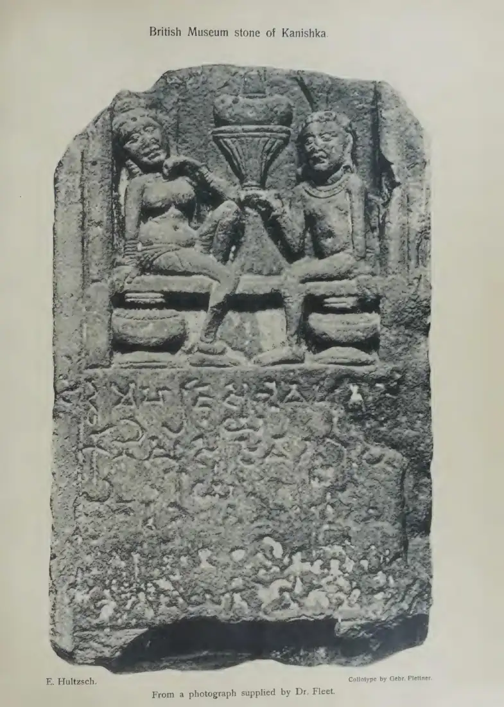

Mâmballi plate of Śrīvallavaṅgôdai
MAMBALLI PLATE OF SRIVALLAVANGODAI; KOLLAM 149.
The copper plate on which the subjoined inscription is engraved, belongs to the Mâmballi bhandârattil of the Mâmballi maṭha and was secured for me for publication by Mr. S. Govinda Pillai, High Court Vakil, Trevandrum. Besides this plate, there are five other odd plates belonging to the same maṭha, which bear fragments of inscriptions of the Kīlappêrûr1 dynasty of the Vênâdu kings. In one of them occurs the name Śrī-Vīra-Dêvadarañ-Kêralavarman of Kīlappêrûr.2
The plate measures and has a hole on the left margin. It does not appear to have possessed a ring or seal. At the left end of the plate, the owner has engraved, in modern Malayâlam characters, the word Mâmballi. Excepting this single word and a few Grantha letters interspersed in the document, the inscription is written in the Vatṭeĵuttu alphabet. The words svasti and śrī in line 1; the letter śrī occurring in the name Śrīvallavaṅgôdai in lines 7, 18 and 19; rakshī2 and rakshā2 occurring in the words rakshichchu and rakshābhôgam in l. 12 are in Grantha characters. The consonant k retains the earlier form, without a loop at the bottom; this form differs from the later ones which are scarcely distinguishable from the symbol for ch. The letter pú (of púṅgâ in l. 3), whilst it has the common form in all other instances, looks like the Grantha letter hra. The language of the inscription is Tamil, tinged here and there with the colloquialisms of the Malabar Coast: e.g. irundaruliy=êdattu vaichchu, (=at the place where they were pleased to be seated), in l. 5; paṭtâra-gakkolla for paṭtâragark-ulla (= belonging to the bhatṭâraka) in lines 6 and 12; ari for ariśi (= rice) in l. 9; Muruñnaiyûr for Muruñgaiyûr in l. 21; Sañnaran for Šañgaran in l. 22; rakshichchu for rakshittu in l. 12. The phrase nâṇalicheydu is contracted in the modern Malayâlam language into nâṇalichche.
This is the earliest known record dated in the Kollam era, and belongs to the reign of the Vênâdu king Śrīvallavaṅgôdai.3 It is dated in the 149th year of the Kollam era,
1 [Kīlappêrûr is annexed as the house-name of the Vênâd (Travancore) princes in later inscriptions (Ind. Ant. Vol. XXV. p. 190). It is a village about 8 miles to the north-east of Ārringal, which is the hereditary domain of H. H. the Senior Rani of Travancore (Mr. Nagamaiya's Travancore Manual, Vol. III. p. 579). The country round Ārringal seems to have been known as Kûpadêśa in ancient times. The late Mr. Sundaram Pillai was of opinion that Vênâdu and Kûpadêśa were two distinct principalities and that the latter was at some stage of its history annexed by the rulers of the former. The Vênâdu kings are said to have assumed the family name Kīlappêrûr after this annexation.—V. Venkayya.]
2 [This name occurs without the title vira in a Vatṭeĵuttu inscription from Vīraṇam in the Travancore State. The late Professor Sundaram Pillai has called the king Kêralavarman II. and assigned A.D. 1193 for his date (Ind. Ant. Vol. XXIV. p. 283).—V. V..]
3 [In the name Śrīvallavaṅgôlai kôdai was perhaps an epithet of the rulers of Vênâdu. The first part of the name, i.e. Śrīvallavaṇ (Śrīvallabha) may be that of the king to whom Vênâdu was feudatory. Such a combination of names is frequently met with in Tamil inscriptions. If the name Śrīvallavaṅgôdai be a similar compound, Śrīvallavaṇ or Śrīvallabha might be the name of a Pândya king. The Pândya king, who probably reigned about this time, was Vīra-Pândya, with whom the Chôla Āditya II. is said to have fought in his youth. Vīra-Pândya himself claims to have taken "the head of the Chôla (king)", and a number of his inscriptions have been found at Śuchîndram in South Travancore. But we have at present no reason to suppose that he bore the name Śrīvallabha, although the designation was common enough among the Pândyas. On the other hand, the Singhalese chronicle Maháwaṇsa refers to an invasion of Ceylon in the period A.D. 975-991 by Vallabha, the Chôla king (Mr. Wijesimha's Translation, Chapter LIV, p. 85). It is, however, doubtful if the Chôlas were powerful enough to undertake an expedition against Ceylon at the time of which we are now speaking. And as the chronology of the Singhalese chronicle is not beyond question, we cannot suppose that the ruler of Travancore mentioned in the Mâmballi plate was a Chôla feudatory. The history of the Chêras is very little known. Consequently it is uncertain to which dynasty the Śrīvallabha, whose feudatory the Vênâdu ruler might have been in A.D. 973, belonged.—V. V..]
on a Sunday corresponding to the Aśvati-nakshatra in the month Vṛīśchika when the planet Jupiter stood in the constellation Tulā. Professor Kielhorn kindly contributes the following remarks on the date:—“If the date were correctly recorded, it would correspond, for the year 149 of the Kollam era, to Sunday, the 9th November A.D. 973, which was the 15th day of the month of Vṛīśchika, and on which [the 11th tithi of the bright half of Mārgaśira ended 11 h. 12 m., while] the nakshatra was Rēvatī for 16 h. 25 m., after mean sunrise, and Aśvinī (Aśvati) for the rest of the day. On the same day Jupiter's mean longitude was 191° 44', and his true longitudo 195° 27', i.e. in either case Jupiter was in the sign Tulā.”
“The difficulty here is, that the day should have been described as the day of the nakshatra Aśvinī, when this nakshatra only commenced 16 h. 25 m. after mean sunrise; and I have no doubt whatever that either Aśvinī (Aśvati) has been quoted erroneously instead of Rēvatī, or Sunday instead of Monday. If the week-day were Monday,1 the date would regularly correspond to Monday, the 10th November A.D. 973, the 16th day of Vṛīśchika, when the nakshatra was Aśvinī (Aśvati) for 16 h. 25 m. after mean sunrise, and when Jupiter of course still was in the sign Tulā.”
The inscription informs us that Umaiyammai of Tirukkalayapuram, daughter of Ādichchan, set up a bhaṭtāraka (image) in the temple at Ayurūr. The king Śrīvallavaṅgōdai made a gift of land to Umaiyammai for the purpose of keeping up the services of the bhaṭtāraka set up in the Ayurūr temple; and she, in her turn, made over the subject matter of the gift to the Tiruchcheṅguṇṛrūr temple, in order that it might be placed under the management of the Poduvāls of that temple. From the produce of the land so given, the Poduvāls of the temple of Tiruchcheṅguṇṛrūr had to supply to the temple daily 4 nālis of rice for daily offerings and annually 200 parais (of 9 nālis each) of paddy.2 If the word uḍai used in l. 18 was really meant to be used in the sense of 'of or belonging to,' the inscription would warrant us to draw the conclusion that Umaiyammai was a near relation of Śrīvallavaṅgōdai — either mother or wife. It would then be more probable to consider her as his wife than as his mother, as the passage Śrīvallavaṅgōdaiy=uḍai Ādichchaṇ=Umaiyammai means Ādichchaṇ Umaiyammai belonging to Śrīvallavaṅgōdai. She might perhaps be the daughter of the Chôla king Āditya II,3 to whose time this record belongs. If, on the other hand; uḍai be a mistake for idai then no sort of relationship need exist between the two.4
The inscription employs several peculiar terms which require some explanation each. The word attippêru (ll. 8 and 19) implies 'acquisition by the pouring of water.' This mode of acquisition differs from others, such as purchase, etc.5 The meaning of the expressions kilīdu and idaiy=īdu is not definitely known. Kil-īdu literally means 'that which is placed under,'6 and idaiy=īdu, 'that which is placed in the middle.' A piece of land placed under the management of a person was perhaps called a kilīdu with reference to that person. If this person sublet to a third party, the person subletting seems to be the idaiy=īdaṇ, i.e. he is the middle man between the owner of the property and the sub-tenant. It is in this sense that the passages of the inscription, in which these terms occur have been translated. The name poduvāl was given to a class of people who were eligible for service in temples. It has now
1 [According to the Editor's footnote 4 on p. 236, the name of the week-day is engraved over an era-sure.—F. K.]
2 [See below, p. 238, note 3.—V. V.]
3 [The record may belong either to the reign of Āditya II. or of his successor Madhurāntaka. If Umaiyammai was the daughter of the Chôla king Āditya II., it is difficult to understand why he is described as a native of Tirukkalayapuram. In all probability she was a private individual.—V. V.]
4 [See below, p. 238, note 10.—V. V.]
5 [See below, p. 237, note 12.—V. V.]
6 [Compare Hultzsch, Ind. Ant. Vol. XX. p. 292.—V. V.]
become the name of a sub-caste among the Ambalavási section of the Malayális. Then again, the word úrálan is explained variously as a trustee of an endowed temple, magistrat de la ville, or a patron or founder of a temple. I believe it is used here in the first two meanings. The term adhikári occurs in the inscriptions of the Tamiñ and Malayálam countries, and is used in the sense of 'an officer in charge of a division,'1 and it is in this sense the term is used in line 23 of the present record. The phrase mukkálvaťtam implies, according to Dr. Gundert, a Bhagavatí temple. If this be the sense in which it is employed in our inscription, then the bhatťáraka set up by Umaiyammai might be taken to be Bhagavatí. But its literal meaning, 'the three-fourths of a vaťtam (circuit or group of villages),' and the use of the bhatťáraka instead of bhatťárakí preclude the possibility of its being a Bhagavatí temple in the present instance. How mukkálvaťtam came to mean a Bhagavatí temple is not known. The meaning of the expressions Širrárnađai and Širrárnađai-ttaňdam is not clear. Hence they have been tentatively translated as "the custom obtaining in small towns" and "the fine levied in accordance with the custom obtaining in small towns."
The places mentioned in this inscription are:—Kollam, Tirukkalayapuram, Ayirúr, Tiruchecheňguňrúr, Iđaiyámanam, Muruňnaiyúr, Mañalmúkku, Puñalúr and Kuđagóťtúr. Of these Kollam, Ayirúr and Tiruchecheňguňrúr are the modern Quilon, Ayirúr and Cheňguňnúr2 (the head-quarters of the táluka of the same name) in North Travancore. Iđaiyámanam might be identified with Eđamaň, a station on the Maniyachi-Quilon branch of the South Indian Railway; and Puñalúr is another station on the same line. I am not able to identify the rest.
TEXT.3
First Side.
- 1 Svasti šrí [||*] Kollan=dôňri núřru-nárpattoňbadám=âňdu Tul.-
- 2 ttuł Viyála=niňra Mirichchiga ňáyiřru [Náyiř=âňda]4
- 3 Achchuvadi i-nná[ł]ál Kollattu=p[pú]ňgáviň kôyilu!=nya-
- 4 riya koťtílu! Tiruchecheňguňrúr=pparuđai=pperu-makka! kúťta-
- 5 ň=gúđi irundarulíy=eđattu5 vaichchu Tirukkalaiyapuratt=Âdichchaň=Umaiyammai
- 6 Ayururiř=piradiťtai-šeyda patťáragaraiyum patťáragarkkolła6 púmiyum Âdi-
- 7 chchaň=Umaiyammaikku [ní]rôđ=atťi-kkođuttáň Vênáđ=uđaiya Šrívallavaňgôdai [||*] Âdich-
- 8 chaň=Umaiyammai táň=atťirpêru konđadu Tiruchcheňguňrúr=ppatťáraga-
- 9 rkku=kkíl-íđáy=chchiřrúr nađaiy=ođu kúđa nâňáli=chchey[da]ri tiruva-mudi-
- 10 ňukkum [o]ňbadi=ňáli=pparaiyál irunûru parai=chche[y]du nel âňdu-
- 11 varai kuđuppidága=ppoduvál kaiyyil nírôđ=atťi=kkuđuttáł [||*] Ayurúr mu-
- 12 kkál-vaťtamum patťárakkolła7 iđaiy-íđum rakshichchu kođuttu rakshá-pôgaň=
1 [The word adhikárin is also used in the sense of 'minister;' South-Ind. Inscrs. Vol. II. p. 92, and above Vol. VII. p. 196.—V. V.]
2 [According to Mr. Nagamaiya the village is called Chengannur (Travancore Manual, Vol. III. p. 581) and there is a large and famous pagoda dedicated to the goddess Bhagavatí, in which there is celebrated annually a festival lasting for 28 days.—V. V.]
3 From the original copper pla te.
4 This portion is engraved over an erasure.
5 Read irundarulíyay-idattu.
6 Read patťáragarkkulła.
7 Read patťáragarkkulła.
Plate 1 is bound after this page.
13 gollakkađaviyar poduválmár [||*] i-pparišu šeyda kíl-ítțil ûrâlarâga i-
14 đaiy-idarâga pukku vilakkavum poru! kavaravum perâr [||*] 1 idâ[nñâli]l=onru
Second Side.
15 šeyyumavan2 yeppêrru-vagai chchirûr-nađai=ttanđam irunûrru=kkalañju
16 pon tanđa-ppađa-kkađaviyan [||*] avanku3 pâdu tângumavannum ippari-
17 šê tanđappađuvidu [||*] i-pparišu mêx=chollappatta Ayurûr mukkâ-
18 l-vatťamum patťâragarkk=olla4 idaiy-iduñ=Šrívallavangôdaiy=uđai-
19 Âdichchañ=Umaiyammai attî-ppêru konđadu [||*] Šrívallavangôdaiy-u-
20 đan=irukka=Ttiruchcheñgunřûr=ppatťâragarkku kíl-idâga attîy=e.5
21 đatt=ařiyuñ=jâdukka! Muruñnaiyûr=Ttêvam=Bavittiran nânum=aři-
22 van [||*] Iđaiyâmanattu Šanñaran=Ganđan nânum ařivan [||*] Manalmûkki[n]
23 Kanđan=Dâmôdaran nânum=ařivan [||*] Vênâtťirku adigârañ=jeygi-
24 nřa Punalûr(i) Iravi Parandavan nânum=ařivan [||*] Kuđagôtťûr=
Pparan-
25 davañ=Ganđan nânum=ařivan [||*] ivai Tiruchcheñgunřûr=ppoduvâ-
26 ! Šát[ta]ñ=Jađaiyan=ełuttu [||*]
TRANSLATION.
(Lines 1 to 7). Hail! Prosperity! In the year one hundred and forty-nine after Kollam appeared, on a Sunday corresponding6 to the Achchuvadi (ašruti i-nakshatra) in the month of Mirichchigam (Vřišchika), when Jupiter stood in Tulâ—while7 the great men of the paruđai8 (assembly) of Tiruchcheñgunřûr were pleased to be assembled9 on this day in the high hall of the palace (situated) in the flower garden of Kollam, Šrívallavangôdai, (the king) of Vênâdu gave, by the pouring of water, to Âdichchañ=Umaiyammai of Tirukkalayapuram, the batťârakar10 set up by Âdichchañ=Umaiyammai at Ayurûr, and the lands belonging to the batťârakar.
(Ll. 8 to 11). Âdichchañ=Umaiyammai gave, as kíl-idu to the batťârakar of Tiruchcheñgunřûr, by pouring water in the hands of the poduvál,11 what she ac.quired by gift,12 so that (he)
1 [The reading seems to be id[ai] naiyil-onru. If nai has to be taken as nđ it would be quite different from the other nás which occur in the inscription and resemble the modern Tamil nđ.—V. V.]
2 [The reading seems to be vevvêrru.—V. V.]
3 Read avaṇukku.
4 Read patťâragarkkulła.
5 Read attîyay-idattu.
6 [The original has Nâyir=ánda Achchuvadi, which would mean in Tamil 'the (nakshatra) Ašvati (Ašvini) which was governed by Nâyiru (the Sun).' If then the week-day be Sunday, Nâyir=ánda would correspond to the modern Nâyirâlcha and the word âlcha which Dr. Gundert derives from the root âlu 'to sink' may, in that case, be derived from the root âl 'to rule.'—V. V.]
7 [The expression idattu vaichchu of the original seems to be used in the sense of the modern Malayâlam idattil vechchu which appears to be almost synonymous with the Tamil idattil.—V. V.]
8 [The word paruđai occurs also in the form parađai and is a tadbhava of the Sanskrit parishat.—V. V.]
9 [The original has "were assembled and were pleased to be seated."—V. V.]
10 [It was evidently the image of the god that was made over to Âdichchañ Umaiyammai; see below, p. 238, note 10.—V. V.]
11 [According to Dr. Gundert, poduvál means "a class of half-Brahmans, temple servants" and agappoduvál with púnundl officiate as priests and administrators of temple property.—V. V.]
12 [Attîrpêru is evidently the same as attîppêru which, according to Dr. Gundert, means "complete purchase of a free h.ld." Mr. Nagamaiya defines the term as 'the out and out surrender of the jenmi's rights by sale (Travancore Manual, Vol. III, p. viii.)—V. V.]
might supply, according to the rate current in small towns,1 four náli of rice2 for (daily) offerings, and two hundred parai of paddy at nine náli per parai, annually.3
(Ll. 11 to 13). The poduváls shall protect the mukkál-vatťam4 of Ayurúr and the idaiyíđu of the bhattáraka, and take (a fraction of the produce) as remuneration for the protection (afforded).5
(Ll. 13 to 14). The úrálars shall not enter as6 idaiyídars in the kílíđu (which is the subject of) this transaction,7 and shall neither dismiss (the kílídars) nor collect the rent.
(Ll. 14 to 16). He that reduces this to a fourth8 shall, consistently with the custom obtaining in small towns, be subject to the general fine of two hundred kałañju of gold.9
(Ll. 16 to 17). He that abets the former shall also be subject to a fine in the same way.
(Ll. 17 to 19). Both the mukkálvatťam of Ayurúr and the idaiyíđu belonging to the bhattárakar, mentioned above, are thus the acquisitions in gift of Ādichchañ=Umaiyammai (of, or) related to Šrívallavańgódai.10
(Ll. 19 to 22). (The following are the signatures of) the sádhus who were present at the time when Ādichchañ=Umaiyammai, while she was with Šrívallavańgódai, made this gift of
1 [I take chirrúr-nadaiyóđu káda as meaning “together with the shrine at Širrúr.” Nadai (nada) is used for ‘temple’ in South Malabar according to Dr. Gundert, and there is a temple at Quilon called Gaṇapatinadai meaning ‘shrine or temple of Gaṇapati.’— V. V.]
2 [I would read in the original chévad=ari (l. 9) and chévadu nel (l. 10) and take chévadu nel as equivalent to sennel which occurs in the Ambásamudram inscription of Varaguṇa-Mahárája (above, p. 90) and which according to Winslow means “superior kind of rice, of a yellowish hue — as šeñjáli.”— V. V.]
3 [As the dative tiruvamudiṇukkum is used and as the purpose for which the 200 parai of paddy had to be supplied is not stated, it looks as if the paddy was to be converted into rice and used for offerings. In this case, there is something wrong in the calculation here made. At the rate of four náli of rice per day the quantity required for a year or 360 days comes to 1,440 náli of rice or 160 para according to the equivalent of the para given in line 10. How 160 para of rice can be obtained from 200 para of paddy it is difficult to understand. According to the Tanjore inscriptions of Rájarája I., 2½ times the quantity of paddy was required to obtain a given measure of rice, and 3 times the quantity according to the Ambásamudram inscription of Varaguṇa-Mahárája.— V. V.]
4 [The word mukkálvatťam occurs in the Tirunelli plates of Bháskara Ravivarman, where Professor Hultzsch has translated it by ‘temple’ (Ind. Ant. Vol. XX. p. 292). According to Dr. Gundert the term denotes in Travancore ‘a temple of Końgapimár.’ An inscription at Tiruválíšvaram near Ambásamudram in the Tinnevelly district mentions Tiripuradána (‘dahánam) paṇniṇa šévagaṇár tirumukkálvatťam, where tirumukkálvatťam appears to mean ‘the holy shrine’ of the god Šiva (No. 120 of the A. A. Superintendent’s collection for 1905).— V. V.]
5 [According to Dr. Gundert rakshá-bhógam is synonymous with rája-bhógam, which denotes the ruler’s share. From certain Tellicherry records (1796-1799) it appears that this share amounted to one-fifth (of the revenue).— V. V.]
6 [The word ága here translated ‘as’ occurs in a similar context in the Tirunelli plates of Bháskara Ravivarman (Ind. Ant. Vol. XX. p. 290, text line 17). It is apparently synonymous with the Tamil ávadu or ágilum and the Malayálam ágatře.— V. V.]
7 [I-pparišu means ‘in this manner, thus.’ I would translate the passage thus: “Neither the úrálar nor the idaiyídar shall be entitled to interfere and disturb the kílíđu thus settled or to seize (any) property.”— V. V.]
8 I.e. he who contributes to the dwindling of this charity.
9 [I would translate the passage as follows: “He who does any injury to this (contract) shall individually pay a fine of two hundred kałañju (to) the shrine at Širrúr.” See notes 1 and 2 on p. 237 and note 1 above.— V. V.]
10 [Instead of Ayurúrír=piraditťai šeyda patťáragar of line 6, we have here Ayurúr mukkál-vatťam which to a certain extent confirms the meaning ‘shrine’ of mukkálvatťam. Instead of patťáragarkk=oļla pūmi in line 6, we have here patťáragarkk=oļla idaiyíđu, which denotes the interest which the Ayurúr shrine possessed in the land acquired by Ādichchañ=Umaiyammai from Šrívallavańgódai. Consequently, the sentence repeats the statement made in lines 5 to 7 that Ādichchañ=Umaiyammai had obtained the concession from Šrívallavańgódai. Accordingly, it seems to me that Šrívallavańgódaiy=udai at the end of l. 18 is a simple clerical mistake for Srívallavańgódaiy=idai. If any such relationship as would be implied by the use of the word udai were intended, it would be more natural to expect it noted when Ādichchañ=Umaiyammai is mentioned for the first time. Besides, it would be unusual for the mother or wife of Šrívallavańgódai to enter into a transaction of this nature with him.— V. V.]
Plate 2 is bound after this page.
land as idaiyīdu to the bhattārakar of Tiruchchengunṇrūr:—1 I, Dēvam-2 Pavittiraṇ of Muruñnaiyūr, also know ;3
(Ll. 22). I, Śañnaran Kaṇdaṇ of Idaiyāmaṇam, also know ;
(Ll. 22 to 23). I, Kaṇdaṇ Dāmōdaraṇ of Maṇalmūkku, also know ;
(Ll. 23 to 24). I, Iravi-Parandavaṇ4 of Puṇalūr, the adhikārin of Vēṇādu, also know ;
(Ll. 24 to 25). I, Parandavan-Kaṇdaṇ of Kuṇagōṭtūr, also know.
(Ll. 25 to 26). This is the writing of Śattaṇ-Śaṇdaiyaṇ, the poduri! of Tiruchchengunṇrūr.
1 [In the original the name Ādichchaṇ-Umaiyammai is not repeated as it is represented in the translation. It looks as if Śrīvallavaṅgōdai was seated with the members of the assembly of Tiruchchengunṇrūr in the palace at Kollam (ll. 4-5) while making the gift to Ādichchaṇ Umaiyammai. Accordingly I would translate this sentence as follows:—“(The following are) the sādhus who know (the transaction entered into) at the place at which (Ādichchaṇ Umaiyammai)—while Śrīvallavaṅgōdai was sitting with (the assembly ?) —granted the ktiīdu (of the land ?) to the lord (bhattāraka) of Tiruchchengunṇrūr.” The same fact is referred to in lines 8 and 9.—V. V.]
2 [The name of the man was apparently Dēvaṇ Pavittiraṇ.—V. V.]
3 I.e. the terms of this transaction and bear witness to the same.
4 [Parandavaṇ is apparently a tadbhava of the Sanskrit Paraṅtapa.—V. V.]

